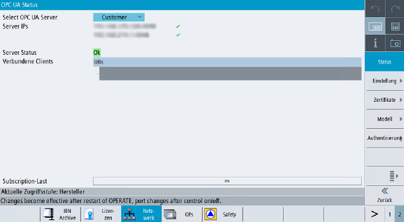

Zusätzlich zu den über OPC UA verfügbaren Server-Statusinformationen ist ein SINUMERIK-Operate-Bild vorhanden, das den aktuellen Status des OPC UA Servers anzeigt.
Um das Statusbild zu öffnen, wählen Sie in SINUMERIK Operate den Bedienbereich "Inbetriebnahme > Netzwerk" aus und drücken Sie dann den Softkey "OPC UA". Das OPC-UA-Statusbild wird als erstes Bild angezeigt.
Status
Wert | Beschreibung | Nähere Erläuterung |
|---|---|---|
Server-IPs | Server-IPs und -Ports des Firmennetzes, Systemnetzes oder Servicenetzes, über die auf den OPC UA Server zugegriffen werden kann | Wenn die Server-IP verbunden ist, wird vor der IP ein grünes Häkchen angezeigt. Wenn die Server-IP getrennt ist, wird vor der IP ein rotes Kreuz angezeigt. |
Server-Status | Möglicher Status des Servers:
| Es werden zu viele Sitzungen von anderen Clients verwendet. Externe Clients können mit der SINUMERIK ONE 10 Sitzungen erstellen. Die maximale Anzahl von Sitzungen in der Konfigurationsdatei beträgt 11, um eine weitere Sitzung für den Status-Client zu ermöglichen. |
Verbundene Clients | Clients, die mit dem Server verbunden sind. Beispiel:
| |
Subscription-Last | Genutzte Kapazität des OPC UA Servers im Hinblick auf mögliche Subscriptions (siehe Kapitel Technische Daten ), nicht die Gesamtauslastung. |